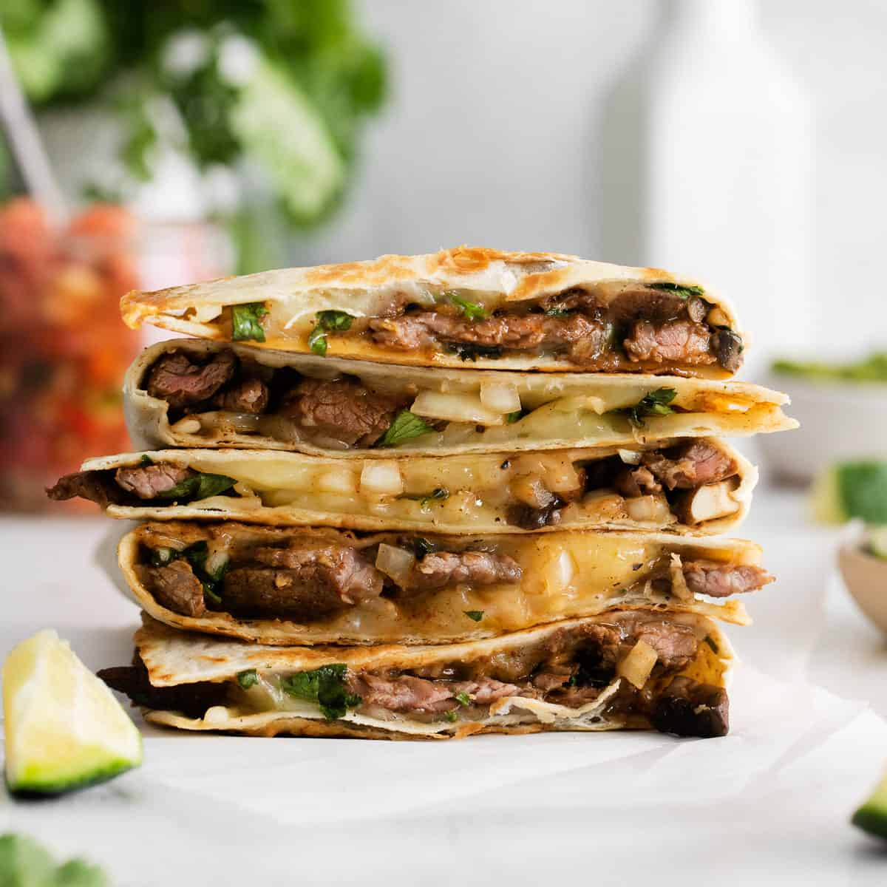

Steak Quesadilla

This steak quesadilla hits the spot for all ages. A quesadilla is made of two tortillas with
with melted cheese in the middle, but much more can be added to the ingredient list to
spice up this simple dish.
The steak quesadilla a great option for an easy lunch or dinner with low cook and prep time.
Along with the traditional cheese base and crisped tortillas, mouth watering slices of ribeye steak, an avocado spread
with onions and cilantro, and simple seasoning will be added to the mix.
Ingredients
- 5oz of Ribeye Steak
- 1/2 avocado
- 1/2 cup of onions (diced)
- 1/4 cup of cilantre (diced)
- 2 cloves of garlic (minced)
- 1 1/2 cups of shredded mozzarella cheese
- 1 tbsp of salt
- 1 tbsp of pepper
- 2 8-inch flour tortillas
- 1 tbsp of garlic powder
- 1 tbsp of paprika
- 1/2 tbsp of chili powder
Steps
- Season the ribeye steak with 1 tbsp of garlic powder, 1 tbsp of paprika, 1/2 tbsp of
chili powder, 1/2 tbsp of salt, and 1/2 tbsp of pepper
- Pan sear the steak over medium heat for 10-12 minutes, flipping halfway way through the cook
time, or until the meach reaches desired level of doneness.
- Slice 1/2 of an avocado and place into a bowl.
- Dice 1/2 cup of onions and add to bowl with avocado.
- Dice 1/4 cup of cilantro and add to bowl with avocado.
- Mince 2 cloves of garlic and add to bowl with avocado.
- Add 1/2 tbsp of salt and 1/2 tbsp of pepper to bowl with avocado.
- Using a fork, mash up the avocado and mix in the other ingredients until it has a spreadable
consistency.
- Spread the avocado mixture along one side of each of the tortillas
- Place the steak on top of the avocado spread on one of the tortillas with an even distribution
- Place 1 cup of mozzarella cheese on top of the avocado and steak with an even distribution
- Place the second tortilla, with the avocado spread facing down, on top of the tortilla with cheese, steak,
and avocado spread.
- Pan sear the quesadilla for 3 minutes over medium heat, flipping the quesadilla halfway through the cook time.